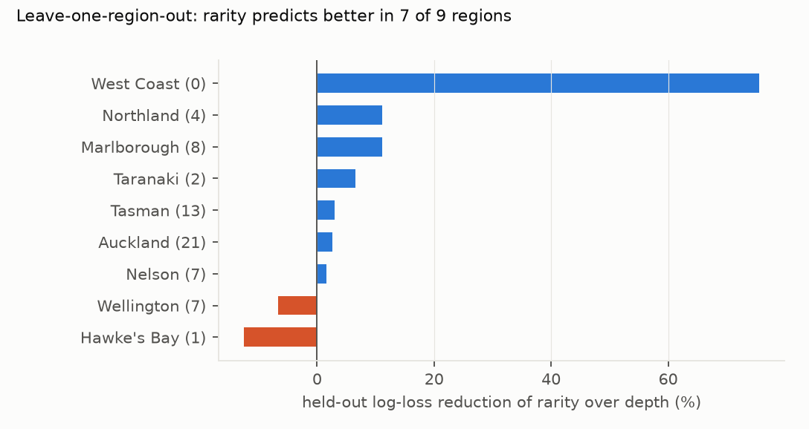
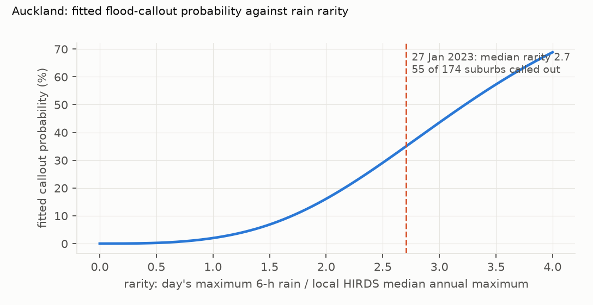

Verdict: H1 Supported (preregistered rule), with a fragile margin.
- H1 (rarity predicts flood callouts better than depth): Supported. All three preregistered conditions hold:
- Held-out log-loss. The rarity model's is lower: D_LL = 4.0×10⁻⁵ (95% storm-day interval 0.9×10⁻⁵ to 7.8×10⁻⁵), 3.3% of the depth model's log-loss.
- Skill. Rarity's skill over a no-rain baseline is 1.072 times depth's (bar: 1.05).
- Regions. Leave-one-region-out, rarity predicts better in 7 of 9 regions.
- The margin is thin.
- One storm. The held-out year has 64 flood place-days, 24 of them on 25–30 June 2025: 22 in the top-of-the-South floods (Tasman 13, Marlborough 8, Nelson 1) and 2 in Auckland. Without those six days, D_LL is 1.3×10⁻⁵ and its interval just includes zero (post hoc).
- The regions. One of the 7 regional "wins" is the West Coast, which had no held-out flood. Without it rarity still wins 6 of 8.
- But rarity is not distinguishable from depth plus the place's climatology (post hoc, prompted by the review). Giving the depth model the place's median annual 6-hour maximum (log M) as an extra covariate matches the rarity model: their held-out log-loss differs by 0.4×10⁻⁵ (−0.6 to 1.7×10⁻⁵), and its skill is 1.064 times depth's. The gain comes from knowing a place's typical heavy rain; dividing by it is one way, not the only way, to use that.
- The secondaries are mixed:
- 24-hour rain: rarity is better (S 1.10, interval excluding zero).
- 1-hour rain: no clear difference (S 1.01, interval spanning zero).
- Broader callout definitions, adding flood-related water-removal callouts or natural-disaster dispatch codes: neither model is clearly better.
- Other rain measures: the AEP form, the 5 km and inverse-distance assignments, and dropping unverified data all favour rarity, though not all meet every bar.
In plain terms
The same downpour can be routine in one place and a disaster in another. Using eight years of Fire and Emergency callout records, we tested whether flood callouts follow how unusual the rain is for a place (its depth compared with that place's typical yearly maximum) rather than the raw amount.
On the year we held back for testing, the "how unusual" version predicted callouts a little better, and it did so in most regions. That is what our preregistered test asked for. But the test year had only 64 place-days with flood callouts, and about two-thirds of the advantage comes from one event, the floods at the top of the South Island in late June 2025. And a depth model that is also told each place's typical heavy rain does just as well, so what helps is knowing the place, not the ratio itself.
In the model fitted to 2017–2024, flood callouts become ten times more likely than on a dry day once six-hour rain reaches about a quarter of a place's typical yearly maximum. On 27 January 2023, Auckland suburbs had 2.7 times their typical yearly maximum in six hours, and about a third of them called out the fire service for flooding.
What was asked
- The question. The lead (
auckland-nz-fenz-impact-rainfall-thresholds) asked whether flood impacts in New Zealand track rain rarity rather than depth, using Fire and Emergency New Zealand's open incident records as an objective, time-stamped impact series. - Analogues. Elsewhere, studies use insurance claims (Spekkers et al., 2013) and evaluate rainfall alerts against reported surface-water flooding (Hurford et al., 2012).
- The index. HIRDS v4 uses the median annual maximum as the index of its regional frequency analysis, which defines rarity here.
How it was done
- Callouts.
- FENZ exposures with natural-disaster type "Flood", by suburb and NZST day (records are converted from civil time).
- Suburbs are geocoded to NZ Gazetteer points by normalised name, rejecting candidates whose nearest gauge belongs to an unrelated council (D2).
- The geocoding audit finds no suburb assigned to a gauge in a distant council (G4); against OpenStreetMap, all 100 of a random sample of places fall in their recorded region (D4).
- Rain.
- The HIRDS lead's council gauge series (seven Hilltop councils and Auckland Council), with its completeness and quality rules.
- Unverified (2xx) data are kept (sensitivity Q drops them), and physically impossible records are screened out (D1).
- Each place-day takes the nearest gauge within 10 km that is usable that day.
- Models. Two logistic regressions, identical except for the rain term: a natural spline in log(1 + depth)
against one in log(1 + rarity). Shared terms:
- 72-hour antecedent rain;
- month and weekend;
- region;
- each suburb's background (non-flood) callout rate.
- Test.
- Held-out mean log-loss on FY2024/25, with a storm-day block bootstrap (2,000 resamples).
- The skill ratio S.
- Leave-one-region-out.
Results
Held-out comparison
| analysis | D_LL (×10⁻⁵, 95% CI) | S | held-out floods |
|---|---|---|---|
| primary (6 h) | 4.0 (0.9 to 7.8) | 1.072 | 64 |
| 1 h | 0.6 (−2.0 to 3.4) | 1.010 | 64 |
| 24 h | 4.9 (1.9 to 8.7) | 1.102 | 64 |
| AEP form (log ARI above the 1.58-year depth) | 3.6 (−0.5 to 8.8) | 1.066 | 64 |
| outcome V1 (adds flood water-removal callouts) | 2.3 (−0.9 to 5.7) | 1.034 | 260 |
| outcome V2 (adds natural-disaster dispatch codes) | 1.1 (−4.9 to 6.4) | 1.005 | 765 |
| Q: unverified rain data excluded | 4.3 (1.5 to 7.7) | 1.094 | 60 |
| gauge within 5 km | 3.0 (0.6 to 5.7) | 1.045 | 48 |
| inverse-distance mean of up to 3 gauges | 4.2 (1.0 to 8.7) | 1.077 | 64 |
| primary without 25–30 June 2025 (post hoc) | 1.3 (−0.2 to 3.0) | — | 40 |
| depth + log M against rarity (post hoc, review): D+M minus R | 0.4 (−0.6 to 1.7) | 1.064 for D+M | 64 |
Leave-one-region-out (results/figures/F2_loro.png)


- Rarity wins in Auckland, Marlborough, Nelson, Northland, Taranaki, Tasman and the West Coast.
- Depth wins in Wellington and Hawke's Bay.
- Few held-out floods. Hawke's Bay had 1 and the West Coast none, so those comparisons are mostly about calibration on dry days.
Three storm days, observed against fitted (results/tables/posthoc.json)
| day | panel places | called out | median 6-h rain | median rarity | depth model | rarity model |
|---|---|---|---|---|---|---|
| Auckland, 27 Jan 2023 | 167 | 55 (33%) | 135 mm | 2.71 | 35% | 37% |
| Hawke's Bay, 14 Feb 2023 (Cyclone Gabrielle) | 91 | 10 (11%) | 61 mm | 1.56 | 8% | 10% |
| Nelson and Tasman, 27 Jun 2025 | 64 | 8 (13%) | 56 mm | 0.97 | 3% | 4% |
Both models underpredict the Nelson–Tasman day badly. Its 6-hour rain was only moderately rare (median rarity 0.97), so whatever drove its callouts, plausibly longer-duration rain, is outside a 6-hour term. Rarity is the less wrong of the two.
Onset thresholds (results/tables/onset.csv, results/figures/F1_auckland_curve.png)


- One curve shape for every region. The models share one rain curve across regions (regions shift only the
baseline), so the rain at which callouts reach 10 times the dry-day rate is the same everywhere by construction:
- a rarity of 0.25 under the rarity model;
- 11 mm in 6 hours under the depth model.
The plan's "region-specific" thresholds are therefore not region-specific in these models. - What the rarity model implies in depth. The local depth threshold runs from about 9–10 mm (Hawke's Bay, Manawatū-Whanganui, Marlborough, Wellington) to 15–16 mm (Northland, West Coast), against a flat 11 mm.
What this does and does not show
- Rarity is at least as good a predictor as depth, and slightly better on the preregistered test. The evidence for "better" rests on one held-out year dominated by one storm. It does not extend to the broader outcome definitions or to the 1-hour duration, where the two models tie.
- What is gained is the place's climatology, not the ratio. A depth model given log M as an extra covariate is as good as the rarity model (reviewer-prompted post hoc). The preregistered H1 compared rarity with depth alone, and that comparison stands; it does not show that the ratio form is better than other ways of using the same local information.
- The practical difference is small at the thresholds where most callouts happen. The two models agree within a few percentage points on the big storm days. Regional depth thresholds implied by rarity run from about 15% below to 45% above the flat depth threshold.
- Limits.
- Callouts are not damage. They reflect drainage, exposure, reporting and FENZ capacity as well as rain. Capacity saturation on extreme days caps counts.
- Coverage.
- 900 places enter the panel: 2,768 geocoded suburb records are 2,609 places once records on the same gazetteer point are merged (D4), and 908 have a gauge within 10 km. They are mainly in Auckland, Wellington, Northland, Hawke's Bay and Taranaki.
- Canterbury, Otago, Southland, Waikato and Bay of Plenty are barely represented.
- Points, not polygons. Suburbs are gazetteer points, because the LINZ suburb polygons need an account the lab cannot create. 907 FENZ suburb names did not match the gazetteer (8% of exposure-days).
- Model form. The models are logistic GLMs with a suburb-background term, not the lead's GLMM.
- Flood days lose their gauge more often than ordinary days. 17.6% of flood place-days in panel places have no usable gauge within 10 km, against 5.5% of all place-days (26% on 27 January 2023), so the panel under-represents the heaviest storms, when gauges fail or record unusable data.
- Fitting. Before D4 the optimiser stopped at scipy's default tolerance, which acted as a slight regulariser; with tight tolerances every fit converges (21 fits, largest gradient 9×10⁻⁹). The spline's interior knots fall in light rain (they are set on all training days), so the curve is linear above about 75 mm, where a third of flood days lie.
- Geocoding. A random 100 panel places, reverse-geocoded with OpenStreetMap, all fall in their recorded region; the 30 whose OSM territorial authority differed were 29 Auckland local-board names and Ōtaki (Kāpiti Coast).
- Rain duration. The 6-hour term can miss storms whose rain is unusual over longer durations, possibly 27 June 2025.
- Data assembly. It needed two rounds of fixes before any result was read (D1, D2). A first analysis on the flawed panel was stopped and opened only after the final result: it also met the H1 rule (S 1.059, 5 of 9 regions).
- Care note. No ethnicity or iwi data were used, and results are aggregate.
Process and deviations
- Preregistration:
plan.md, committed before any FENZ outcome row was read. - Deviations (
deviations.md):- D1: a physical screen for rain records (shared with the HIRDS lead's D6); one region per suburb; file encoding and date formats.
- D2: geocoding and suburb-key fixes from the G4 audit; the stopped first run.
- D3: rain rebuilt with the HIRDS lead's corrected screens before review; H1 unchanged (S 1.076 → 1.073).
- D4: fixes from the independent review: one unit per gazetteer point (954 units were 900 places), region from the TLA, optimiser tolerances; H1 unchanged (S 1.072). Depth plus climatology added as a reviewer-prompted post hoc.
- Post hoc:
code/posthoc.py: the result without late June 2025, and the storm-day traces. - Gates:
- G1: in the plan (the test year scored once per panel build; activity from training years only).
- G2:
results/tables/coverage.json. - G3:
results/plausibility.md. - G4:
results/tables/g4_geocode.json,g4_osm.json(100 places against OpenStreetMap) andg4_window.csv. - G5:
review/overclaim_check.md. - G6:
results/attribution_ledger.csv. - G7: does not apply.
- Independent review: queued (Fable), per the lab's pacing rule.
- Data: Fire and Emergency New Zealand Incident Data (CC BY 4.0, New Zealand Government); the NZ Gazetteer (LINZ, CC BY 4.0); council rain gauges, including Auckland Council's; HIRDS v4 (NIWA / Earth Sciences New Zealand).
Reproducing it
- The HIRDS lead's series and depths (its "Reproducing it").
code/build_fenz.py,code/geocode.py,code/rain_daily.py,code/panel.py.code/analyse.py(about 20 minutes),code/posthoc.py,code/g4_check.py,code/figures.py.